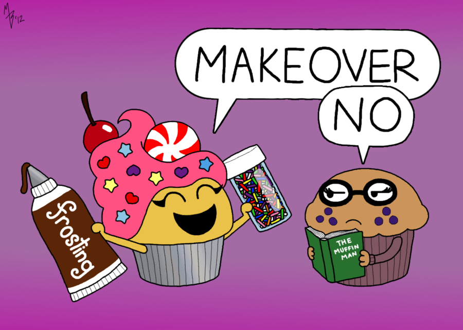

HOME
Muffins

This recipe makes 12 plain muffins.
Refer to directions at the bottom for how to modify the recipe for different types of muffins.
Ingredients:
- 2 cups white flour
- 1 tablespoon baking powder
- 1/2 teaspoon salt
- 2 tablespoons sugar
- 1 egg, slightly beaten
- 1 cup milk
- 1/4 cup melted butter
Method:
- Preheat the oven to 375°F.
- Butter muffin pans.
- Mix the flour, baking powder, salt, and sugar in a large bowl.
- Add the egg, milk, and butter, stirring only enough to dampen the flour; the batter should not be smooth.
- Spoon into the muffin pans, filling each cup about two-thirds full.
- Bake for about 20 to 25 minutes each.
Variations:
Blueberry Muffins:
- Use 1/2 cup sugar.
- Reserve 1/4 cup of the flour, sprinkle it over 1 cup blueberries, and stir them into the batter last.
Pecan Muffins:
Use 1/4 cup sugar.
Add 1/2 cup chopped pecans to the batter.
After filling the cups, sprinkle with sugar, cinnamon, and more chopped nuts.
Whole-Wheat Muffins:
Use 3/4 cup whole-wheat flour and 1 cup white flour.
Date or Raisin Muffins:
Add 1/2 cup chopped pitted dates or 1/3 cup raisins to the batter.
Bacon Muffins:
Add 3 strips bacon, fried crisp and crumbled, to the batter.